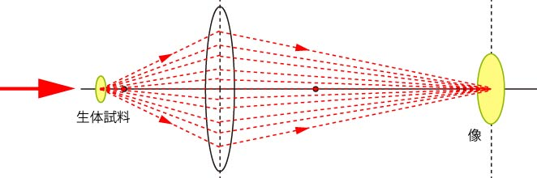
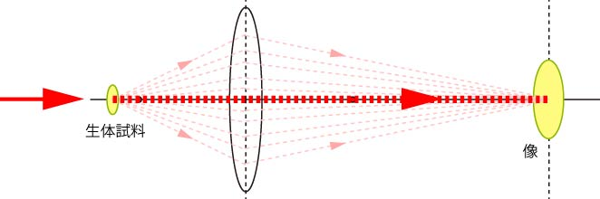
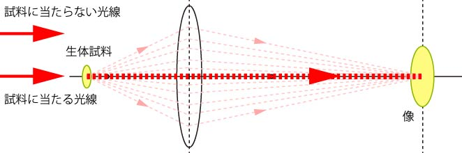
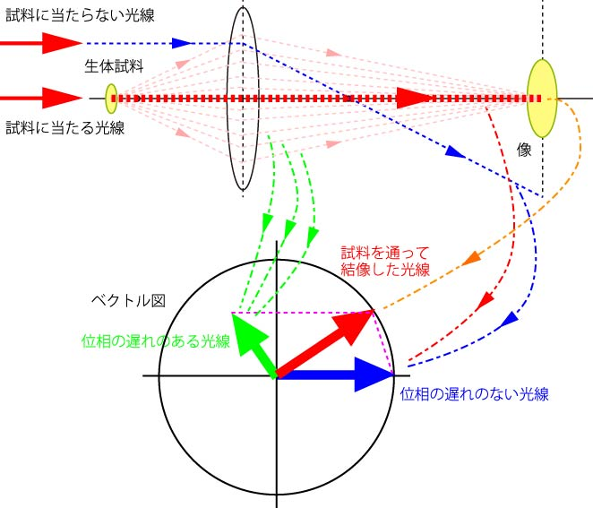

さて，もう一度結像のおさらいです．
試料からの光は，レンズを通して最終的に結像します．
試料からの光は，様々な方面に広がりますが，その一部のみがレンズによって集光されるのです．
ですから，レンズが大きいほど（N.A.が高いほど），よりよい像が得られるのです．

さて，このレンズを通しての光の軌跡の中で，真ん中の光線，に注目しましょう．

これは，レンズによって全く影響を受けていませんね．
当然，レンズの中央なので，屈折することをせずに通過するのです．
つまり，この光線は試料に当たらない光と全く同じなのです．

つまり，
位相のずれていない光線
なのです．
つまり，図に示すと，

という意味を持つのです．
つまり，
結像した像は様々な位相（振幅，周波数も）の違う光線の合成像である
といえるのです．
これは，まさしく，フーリエ変換，ですね．
では，次にこの位相遅れをいかに振幅の変化に持って行くかを考えましょう．